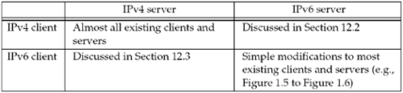

| [ Team LiB ] |
|
12.1 IntroductionOver the coming years, there will probably be a gradual transition of the Internet from IPv4 to IPv6. During this transition phase, it is important that existing IPv4 applications continue to work with newer IPv6 applications. For example, a vendor cannot provide a telnet client that works only with IPv6 telnet servers but must provide one that works with IPv4 servers and one that works with IPv6 servers. Better yet would be one IPv6 telnet client that can work with both IPv4 and IPv6 servers, along with one telnet server that can work with both IPv4 and IPv6 clients. We will see how this is done in this chapter. We assume throughout this chapter that the hosts are running dual stacks, that is, both an IPv4 protocol stack and an IPv6 protocol stack. Our example in Figure 2.1 is a dual-stack host. Hosts and routers will probably run like this for many years into the transition to IPv6. At some point, many systems will be able to turn off their IPv4 stack, but only time will tell when (and if) that will occur. In this chapter, we will discuss how IPv4 applications and IPv6 applications can communicate with each other. There are four combinations of clients and servers using either IPv4 or IPv6 and we show these in Figure 12.1. Figure 12.1. Combinations of clients and servers using IPv4 or IPv6. We will not say much more about the two scenarios where the client and server use the same protocol. The interesting cases are when the client and server use different protocols. |
| [ Team LiB ] |
|